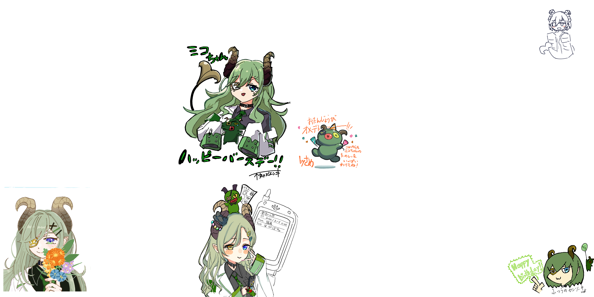
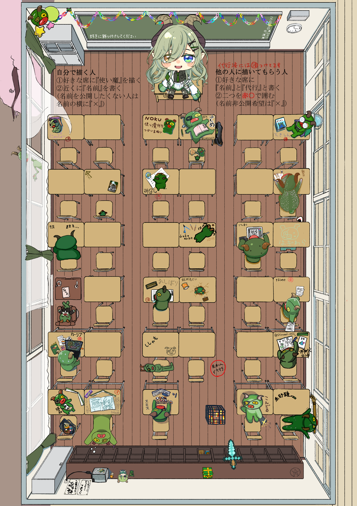

ななし学園3年5組
学園風コンセプトでお届けする、誕生日祝いの特設ページです。 クラスの思い出をめぐるように、キービジュアル、寄せ書き、座席表、プロフィール帳をご覧ください。
寄せ書きの紹介
クラスのみんなから集まったメッセージを、1枚の寄せ書きにまとめました。 たくさんの「おめでとう」の気持ちをぜひ受け取ってください。

クラスの座席表
学園企画の世界観に合わせて作成した、3年5組のクラス座席表です。 スマホでは横にスクロールして全体を確認できます。
